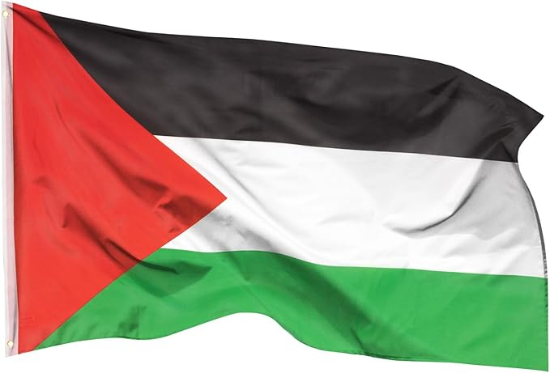

Matériau de haute qualité: notre drapeau de la Palestine en 100% polyester est résistant aux intempéries et robuste. Parfait pour les passionnés de drapeaux et les supporters qui souhaitent afficher leur soutien, quel que soit le temps. Œillets en laiton pour une fixation facile: le drapeau de la Palestine est muni d’œillets solides en laiton qui garantissent une fixation sécurisée. Idéal pour les Palestiniens qui souhaitent afficher fièrement leur drapeau national. Coutures doubles robustes: grâce à ses coutures doubles robustes, le drapeau palestinien résiste même aux vents forts. Un incontournable pour tous ceux qui recherchent un drapeau durable. Couleurs éclatantes: le drapeau de la Palestine séduit par ses couleurs vives qui ne ternissent pas. Parfait pour les Palestiniens fiers de montrer leur culture et leur histoire. Votre drapeau restera toujours éclatant
| Description | Photo | Prix |
| Affichez votre soutien indéfectible à la Palestine |  | 11.75€ |